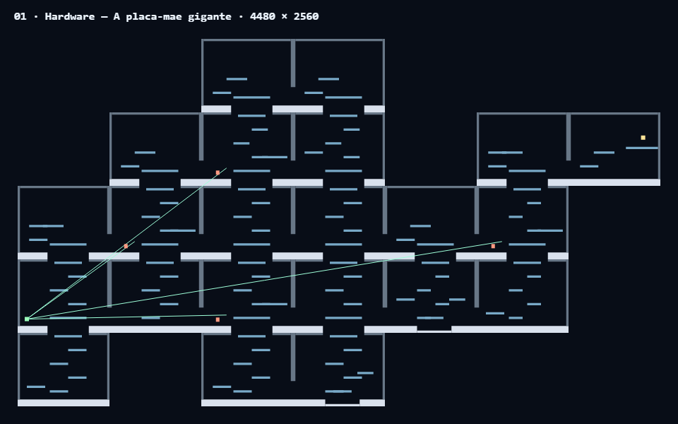
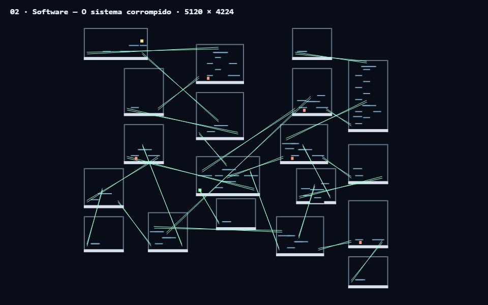
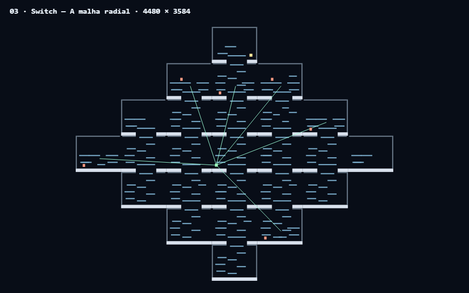
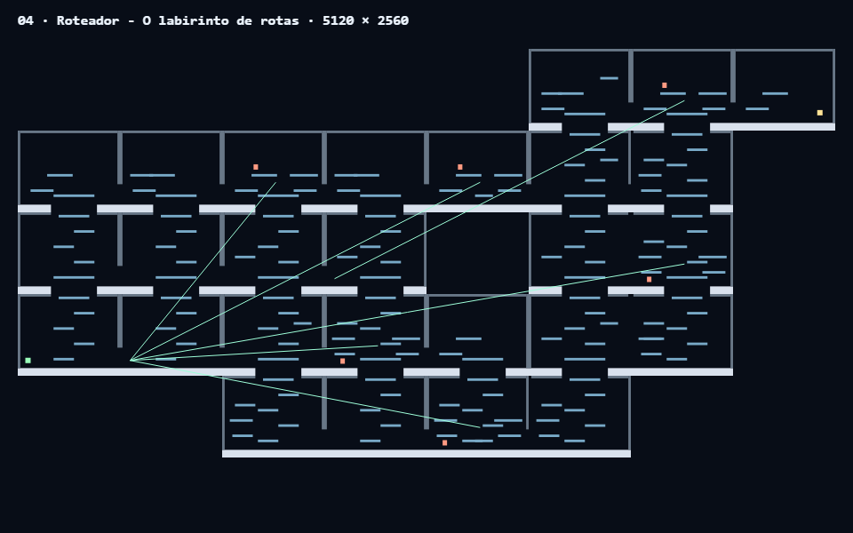
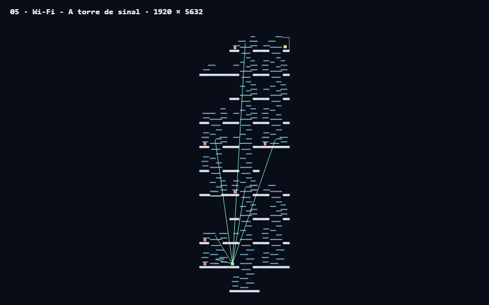
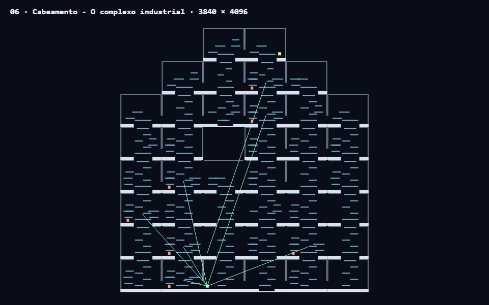
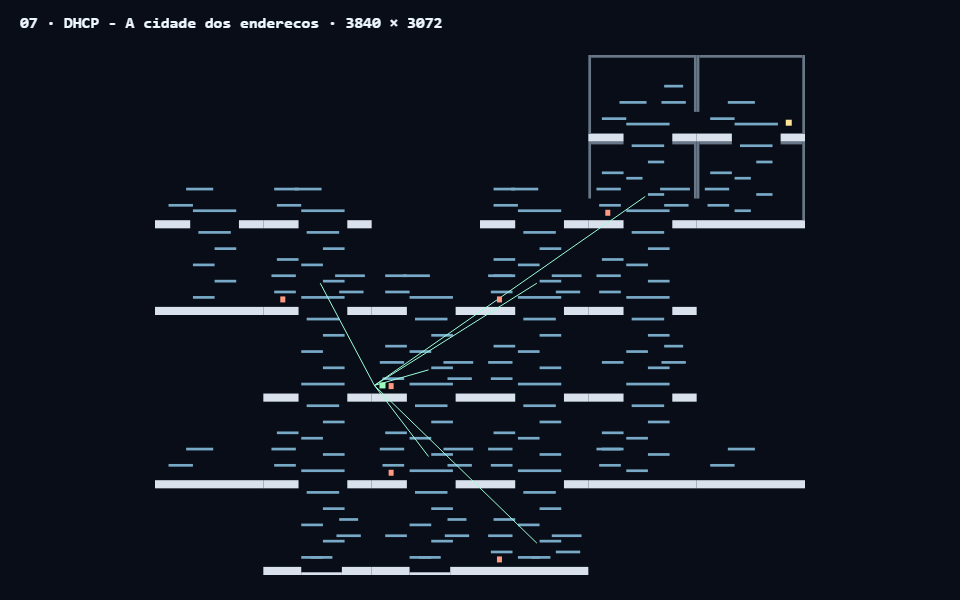
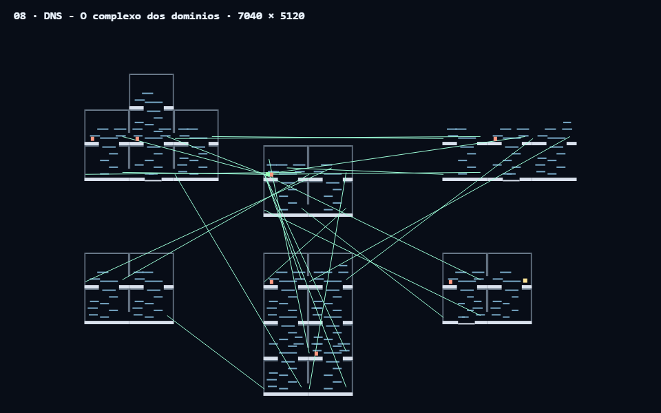
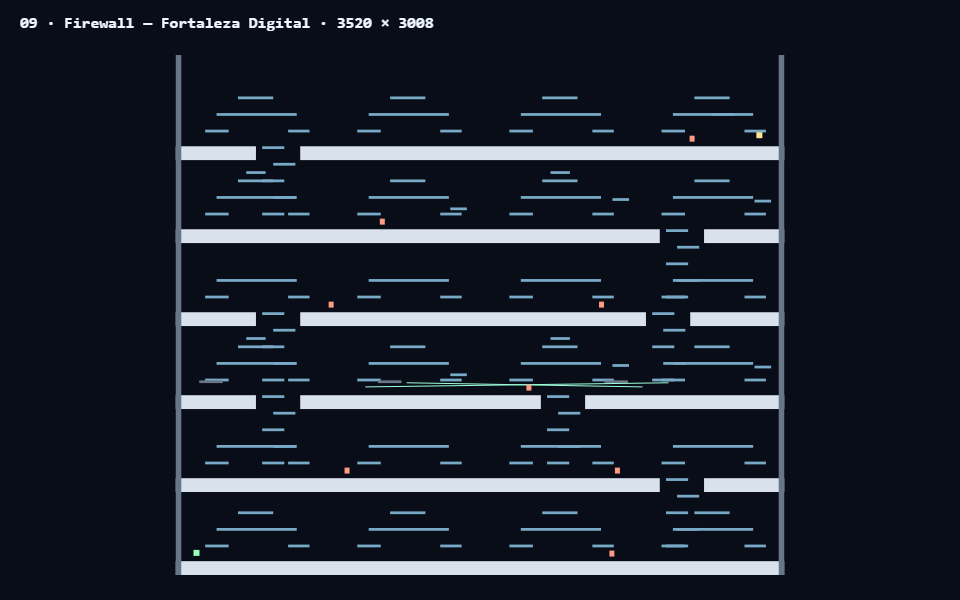
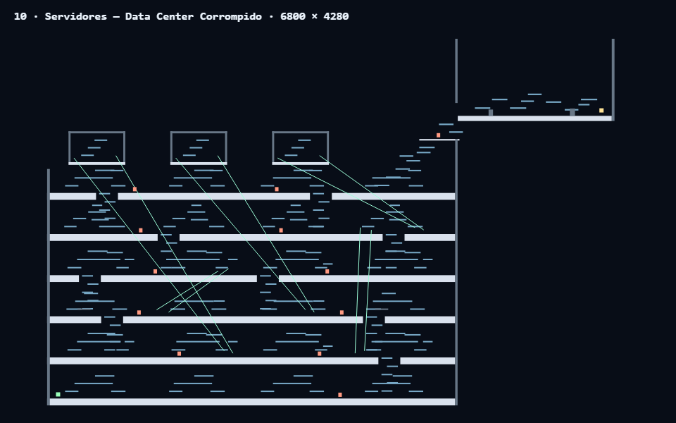

Sem arte de fundo. Cinza: colisões. Azul: plataformas. Linhas verdes: interfaces. Verde: entrada. Amarelo: saída. Vermelho: componentes. Escala uniforme dentro de cada mapa; dimensões indicadas.









